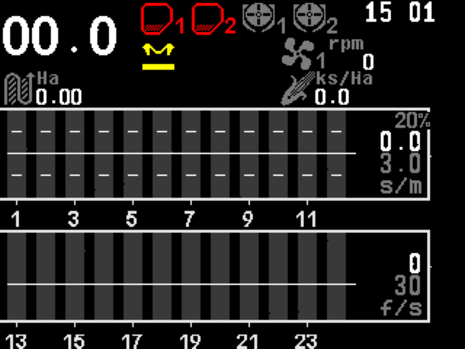

The home screen
What every part of the Hectare Mini home screen is — speed, indicators, area, population, the diagrams and rate fields — and what you can do from it.
The home screen is the main working screen. It shows the state of every device of the machine and, below, one diagram for the seed and one for the fertilizer. What it shows follows the profile: every device entered there gets its indicator. When space runs short, the panel makes the speed figure or the diagrams smaller, and on a crowded screen it leaves out the area or the population indicator.
A planter with seed and fertilizer

- Travel speed, in km/h. Messages about the speed replace the figure. Speed
- Hoppers, numbered. Red — empty. Hopper
- Dispenser shafts. Grey — in order; the icon turns while the shaft turns. Dispenser shaft
- Clock. The time of day; it also carries messages. Clock
- Markers. Yellow — both marker arms are up. Markers
- Fan and its speed in rpm. Fan
- Area treated on the active field, in ha. Area
- Population — the seeding density in thousands of seeds per hectare, in the “Precise” mode. Population
- Seed diagram. One column per seed sensor. The section diagram
- Scale of skips and doubles, in per cent (“Precise” mode).
- Seed rate field. Measured rate on top, target below, here in seeds per metre. Change the target rate
- Section numbers.
- Fertilizer diagram, here in the “Flow” mode, with its control line.
- Fertilizer rate field. Measured flow on top, alarm level below, in fertilizer units per second.
A grain drill on the bench

- Travel speed.
- Hoppers. Red outline — empty.
- Dispenser shafts. Red — alarm: the shaft does not turn.
- Clock.
- Fan. Red with XXXX — no connection to the fan sensor.
- Area.
- GPS reception. The satellite icon and the number of satellites used. GPS reception
- Seed column. Dark grey — no flow, the drill stands.
- Control line. The alarm level drawn across the diagram.
- Rate field. Measured flow on top, alarm level below, in seeds per second.
- Section numbers.
All indicators and their states: Indicators. The diagram — columns, lines, colours: The section diagram.
Two modes
The home screen works in two modes:
- Monitoring mode — after switch-on. You watch the work and change the rates.
- Sensor setup mode — hold “MENU”. One device is shown on a white background; “UP” and “DOWN” move to the next device, “PLUS” and “MINUS” take it into or out of control, “MENU” opens its context menu. “BACK” leaves the mode. See Take a sensor into or out of control.

What you can do from the home screen
| To do this | Do this |
|---|---|
| Open the main menu | “MENU” |
| Change a target rate or alarm level | “PLUS” / “MINUS”; “UP” / “DOWN” choose the field — Change the target rate |
| Let the panel set the alarm level | Hold “BACK” while seeding — Set the alarm level |
| Lock or unlock product application | Hold “HOME” — Lock application by hand |
| Open the tramline bout menu | “BACK” — Next tramline bout |
| Open the settings of a device | Hold “MENU”, select it, “MENU” |
| Go to the next working screen | “HOME” — Screens, menus and windows |
Something your machine does that this page does not answer? Write to support@agriwelt.com — an engineer answers.